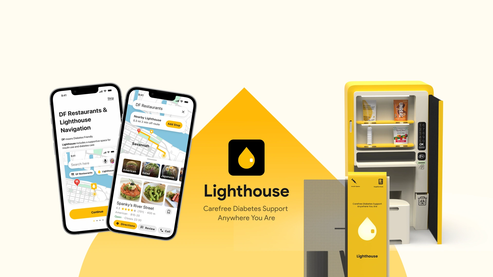
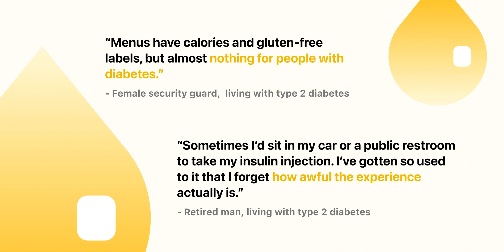
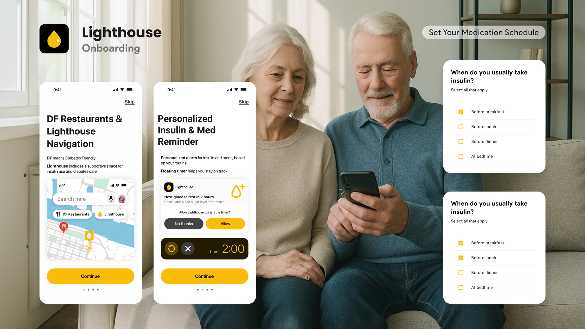

Lighthouse · Student team project & Concept
Carefree diabetes support, wherever the trip goes
Over 10 weeks, our five-person team designed Lighthouse, a service that helps travelers with diabetes find suitable meals, a more discreet place to inject, and timely reminders to stay on track. I took part in research from start to finish, designed every screen of the Google Maps experience, and later rebuilt the prototype with AI-assisted coding.
- Problem
- Travel breaks the routines people with diabetes rely on, from what to eat to where to inject.
- Solution
- Diabetes support built into Google Maps, from finding meals and Lighthouse stations to medication and glucose reminders, so care fits into the trip.
- Result
- 8 design awards (Indigo Design Awards, 2024 - 4 Gold, 1 Silver, 2 Bronze and European Product Design Award, 2024) and 83% satisfaction in usability testing.
Discovery
Travel breaks the routine
At home, managing diabetes follows a steady rhythm: check glucose, inject, eat, check again. Travel takes that rhythm apart. Our first idea was simple: a reminder app, so people wouldn’t forget their medication on the road.
But it was never just about medication. We talked with five people living with diabetes, and their stories had little to do with forgetting.

Across our interviews, the same three challenges kept coming up:
01 · Dining requires more planning
Nutrition information for people with diabetes is rarely available.
02 · Injection depends on place
People know when to inject but struggle to find where.
03 · Routines become easier to miss
Without daily cues, glucose checks and medication slip.
So we changed the design direction. A reminder app could only solve one of these three problems. Instead, we designed for all three:
01 · Dining → Google Maps Plugin
Our interviewees already used Google Maps to find restaurants, so we built support right into it.
02 · Injection → Lighthouse stations
Semi-private spaces in malls and near tourist spots to inject and restock.
03 · Routines → Smart reminders
Kept from our first idea, but now built around each traveler’s day.


Lighthouse stations are semi-private booths with a place to sit, diabetes-friendly snacks and supplies, and safe needle disposal.
Final Solution
1. Getting started: set up once.
Onboarding learns each user's medication routine, so reminders fit their day, not a generic schedule. (Routines)

2. Before meals: eat well, inject with ease.
Users find diabetes-friendly restaurants, add a nearby Lighthouse as a stop on the way to inject and restock, then continue to their meal. (Dining + Injection)

3. After meals: stay on track.
A gentle reminder and timer prompt a glucose check after eating, even mid-trip. (Routines)

Results
Usability testing
83%
average satisfaction across 20 participants.
In task-based usability testing, participants completed the full pre- and post-meal flow.
8 design awards (Indigo Design Awards, 2024 - 4 Gold, 1 Silver, 2 Bronze and European Product Design Award, 2024)
Reflection
Question the first framing.
We almost built a reminder app for a problem that was really about coordination. Listening past the obvious answer changed the whole product.
Meet people where they already are.
Instead of asking travelers to adopt a new app, we put support inside a tool they already trust. Adoption is a design problem, not just a marketing one.
Full research and process available on request.